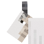
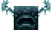

Vsebina te strani je povzeta po Wikipedija in po Minecraft Archive.
Minecraft je graditeljska videoigra z elementi preživetvene videoigre razvijalskega studija Mojang, ki je prvič izšla kot javna preskusna različica leta 2009, polna različica pa leta 2011. Razvil jo je švedski programer Markus »Notch« Persson v programskem jeziku Java in že v preskusni fazi z njo požel velik uspeh, ob izidu polne različice pa je prepustil vlogo vodje razvoja Jensu Bergenstenu.
Vir slike: MovingBlocks
| Slika | Ime | Biom | Nevarnost |
|---|---|---|---|
| |
Aksolotl | bujno podzemlje | pasiven |
| |
Svetleči ligenj | ocean, ocean v jami | pasiven |
|  | Koza | gore | nevtralen |
|  | Čuvaj | "sculk" | sovražen |